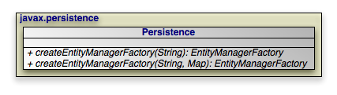

2.6. Persistence

|
|
OpenJPA also includes the OpenJPAPersistence helper class to provide additional utility methods. |
Within a container, you will typically use injection to access an EntityManagerFactory.
Applications operating outside of a container, however, can use the
Persistence class to obtain EntityManagerFactory objects in a vendor-neutral fashion.
public static EntityManagerFactory createEntityManagerFactory(String name);
public static EntityManagerFactory createEntityManagerFactory(String name, Map props);
public static PersistenceUtil getPersistenceUtil();Each createEntityManagerFactory method searches the system for an EntityManagerFactory definition with the given name.
Use null for an unnamed factory.
The optional map contains vendor-specific property settings used to further configure the factory.
persistence.xml files define EntityManagerFactories.
The createEntityManagerFactory methods search for persistence.xml files within the META-INF directory of any CLASSPATH element.
For example, if your CLASSPATH contains the conf directory, you could place an EntityManagerFactory definition in conf/META-INF/persistence.xml.
The getPersistenceUtil method returns a PersistenceUtil interface that can be used to determine whether an entity or attribute of an entity is loaded.
PersistenceUtil pUtil = Persistence.getPersistenceUtil();
if (!pUtil.isLoaded(myEntity)) {
loadEntity(myEntity);
}